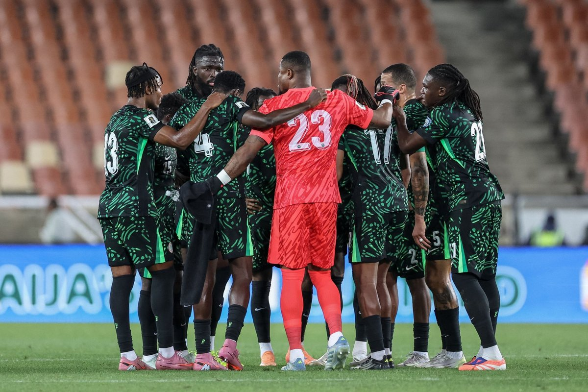

Odegaard Urges Arsenal Recovery After Shock League Cup Loss To Fleetwood
Arsenal captain Martin Odegaard has urged his side to recover quickly after suffering a shock League Cup elimination on penalties against fourth-tier Fleetwood.
Super Eagles, AFCON and the African football headlines. (31 stories)

Arsenal captain Martin Odegaard has urged his side to recover quickly after suffering a shock League Cup elimination on penalties against fourth-tier Fleetwood.

Arsenal manager Mikel Arteta expressed disappointment after his side suffered a shocking League Cup penalty shootout loss to lower-tier Fleetwood.

Thierry Henry has defended his Ballon d'Or interactions with Lamine Yamal, explaining that his questions were light-hearted banter rather than disrespect.

Fourth-tier Fleetwood Town eliminated Arsenal from the Carabao Cup following a 5-3 penalty shoot-out win after a 1-1 draw, according to Vanguard.

Barcelona winger Lamine Yamal has claimed the 2026 Young Talent of the Year award at the Ballon d’Or ceremony for the third consecutive time, Punch reports.

Nigeria, Ghana, and Morocco have advanced to the Round of 16 at the 2026 FIFA U-17 Women’s World Cup in Morocco, Vanguard reports.

Manchester United boss Michael Carrick could lose his job if his team fails to secure a victory against Bournemouth on Sunday, according to reports.

Julian Alvarez has apologised to Atletico Madrid fans for attempting to force a summer exit, acknowledging his mistake after restoring form with recent goals.

Julian Alvarez scored the winning goal for Atletico Madrid in their 1-0 La Liga victory over Deportivo La Coruna, Vanguard reports.

Brazilian football legend Ronaldinho is coming out of retirement at age 46 to play for Italian third-tier side Ravenna next month, according to Punch.

Tottenham Hotspur recorded a rare 2-0 victory over Chelsea at Stamford Bridge following an own goal and a red card for Cole Palmer, Vanguard reports.

Gianni Infantino claims strong backing from member associations for his FIFA presidential re-election bid following regional endorsements, according to Vanguard.

George Ilenikhena has scored in consecutive matches for Saudi Arabian side Al-Ittihad, bringing his goal contributions to eleven this season, Punch reports.

MC Alger overturned a first-leg deficit to beat Rangers International 3-0 and qualify for the CAF Champions League group stage 3-2 on aggregate.

Victor Osimhen ends his UCL drought as Galatasaray come from behind to beat Lille 4-2.

Sanctions for failing to provide adequate security at home games.

Nigeria’s under-17 women’s team lose their opening match of the tournament.

Nine players make debuts; Chelle hails response after injury crisis and Bissau loss.

Super Eagles coach Eric Chelle faces an injury crisis with Ndidi out and several players withheld by clubs ahead of the Russia friendly.

Nigeria started seven Premier League players and still lost; Ghana threw bottles, then lost their coach.
The wildest football moments off the pitch this week.

Haaland, Doku and Cherki score; Liverpool fans unfurl a banner reading "a generation of supporters cheated".

A look back at the heroes of Tunisia 1994 who are no longer with us.

Former Al-Nassr player Fahd Al-Hraifi says he would have passed it; Ronaldo is 20 goals short of 1,000.

"Sorry to my team and my fans," he wrote on Instagram. Dressing-room sources say he did not intend to hurt Saliba.

The 41-year-old captain apologised, saying coach Jorge Jesus "broke his word" over his role against Norway.

The €140m record signing breaks his duck, but Madrid finish with ten men and sit six points behind Barcelona.

CAF's boss calls claims that he takes orders from FIFA or UEFA "nonsense, absolute rubbish."

Iheanacho and Edokpolor also score as Nigeria show character in the friendly in Nizhny Novgorod.

Akor Adams says the squad accepts responsibility for the Guinea-Bissau defeat.

A FIFA presidency challenge and a big new contract at the Emirates.

Lobbying, counter-lobbying and a crunch double-header: the Eagles' coordinator, media manager and curator roles are reportedly up for change.
No stories from the past week here yet. Check back soon.
The Entrepreneur Support Network is now accepting applications across three pathways.